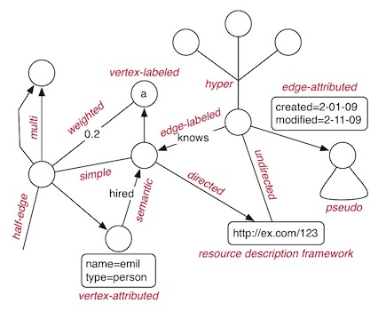
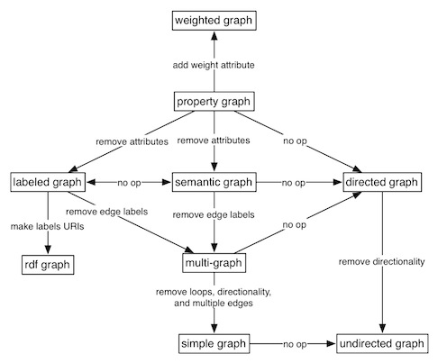

In the world of graphs, there are numerous graph types. The diagram below describes the important feature of a collection of common graph types. Note that many of these types can be mixed and matched. For example, the property graph model of Blueprints can be seen as a vertex/edge-labeled/attributed, directed, multi-graph.

- half-edge graph: a unary edge graph where an edge connects only one vertex.
- multi-graph: when edges are labeled, the various ways in which vertices are related can be denoted.
- simple graph: the prototypical graph where an edge connects two vertices and no loops are allowed.
- weighted graph: used to represent strength of ties or transition probabilities.
- vertex-labeled graph: most every graph makes use of labeled vertices (e.g. an identifier)
- semantic graph: used to model cognitive structures such as the relationship between concepts and instances of a concept.
- vertex-attributed: used in applications where it is desirable to append non-relational metadata to a vertex.
- edge-labeled graph: provides the ability to denote the way in which two vertices are related (e.g. friendships, kinships, etc.).
- directed graph: orders the vertices connected by an edge to denote directionality.
- hypergraph: generalizes a binary graph to allow an edge to connect to an arbitrary number of vertices.
- undirected graph: the typical graph that is used when the relationship is symmetrical (e.g. friendship).
- resource description framework graph: a graph standard developed by the the World Wide Web consortium that denotes vertices and edges by Uniform Resource Identifiers (see Sail Implementation and Sail Ouplementation).
- edge-attributed graph: used in applications where its desirable to append non-relational metadata to an edge.
- pseudo graph: generally allowed in most disciplines to denote a reflexive relationship.
The property graph model is a convenient graph data model as it is easy to represent other graph types. The following diagram provides the morphisms that go from one graph type to another. Note that a hypergraph can be modeled using a property graph, though its not as straightforward as modeling other graph types.
